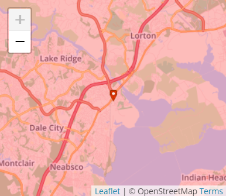
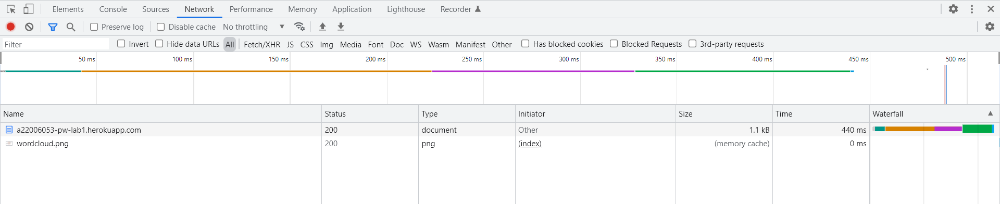

Programação Web A Internet e a Web
Através do site
WhatIsMyIPAdress
conseguimos observar que o IP que nos é atribuido não está exatamente no
sitio onde nos encontramos,
sendo que no momento em que fiz a pesquisa
pelo IP estava na Universidade Lusofona e o site dava a indicação de que
estava perto de oeiras.
Conseguimos também através da linha de comandos descobrir o IP do site que criamos e os servidores onde este IP se encontra estavam nos Estados Unidos.
Pelo site do GeoTraceRoute conseguimos ver a rota que os pacotes de IP fazem, desde o computador utilizado até ao destino. Os sitios por onde passa são:
Inspecionando o Site criado
verificamos que no separador da Network os dois ficheiros descarregados são
os seguintes que aparecem na imagem,
estando os tempos também representados na mesma.

Quando clico para observar a preview aparece a parte de texto do site.
Os Headers apresentam os Response Headers e Request Headers.
O Timing tem informações relativamente ao tempo do Resource Scheduling, Connection Start, Request e Respond.